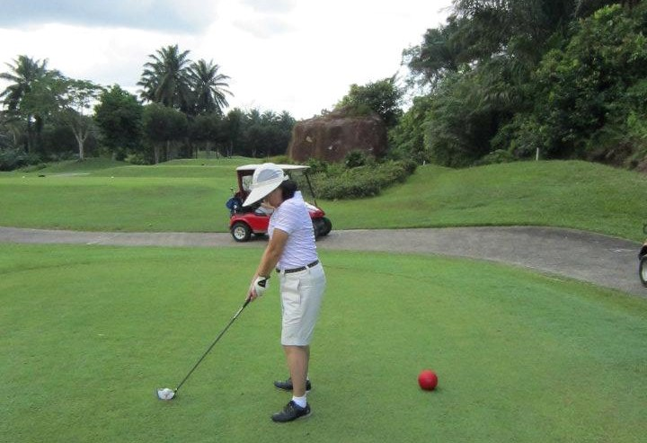

Golf is an incredibly enjoyable game. Occasionally, or perhaps even regularly, it is also extremely frustrating, because the tolerance of error in a golf shot is very low. Even though one may spend hours practising, the results might not show. That being said, I do enjoy the game of golf, and I will list the reasons why I enjoy golf below.
I play golf with my family, and hence, I treasure these playing times and hold these memories close to my heart.
Golf, like any other sport, requires discipline, to continually improve. I have spent numerous hours in the driving range to improve my skills. Even though I still cannot consistently hit a good golf shot, the occasional results in good golf shots are extremely rewarding.
A game of golf is similar to solving a series of challenges. Every shot will have its unique challenge due to the different terrain, distances, and environment. I enjoy facing and solving these unpredictable challenges.
Perhaps, golf has a parallel with life. There is a start point (tee-off box), and an end point (hole). Even though one may be faced with numerous challenges in order to get to the end point, if one perseveres, more often than not, one would get to the end. Also, ones result in a game of golf is usually predominantly dependent on oneself. One competes with oneself in getting a better result, in hitting a better shot. In life, we fight our own unique battles, and we should not be overly competitive with other people.
Here is a picture of my Mum playing golf. Even though she is not a sporty person, and the guys in my family are relatively better players, she strives to improve her game by focusing on improving herself, rather than comparing with others.
